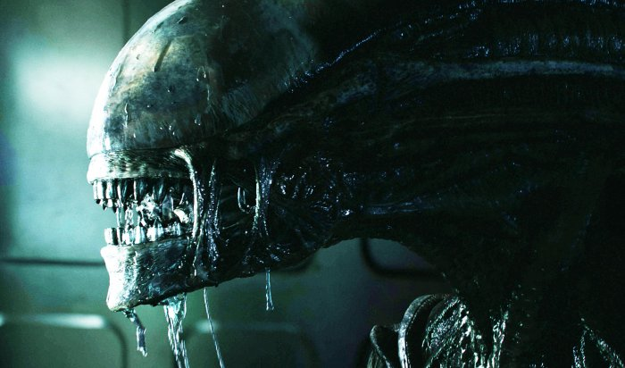
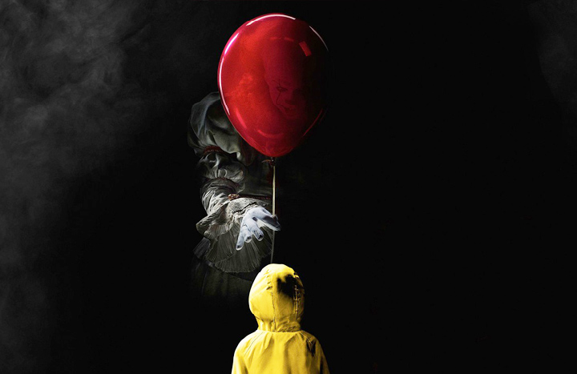
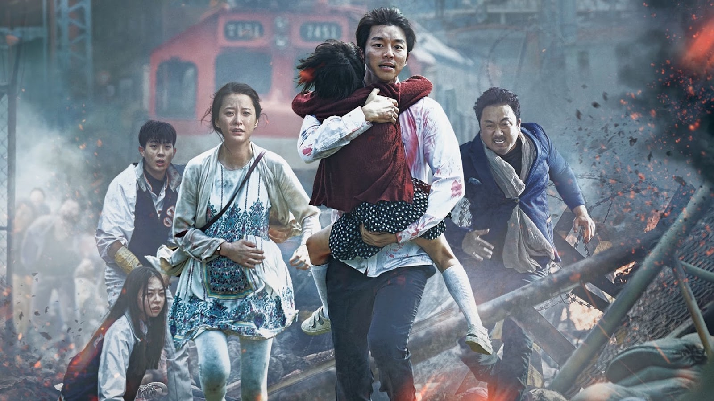
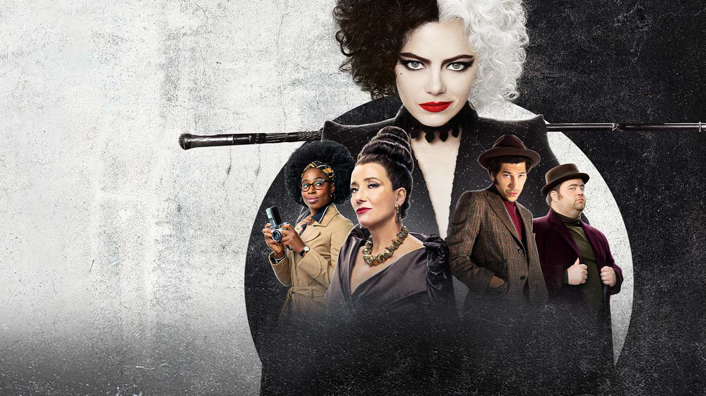
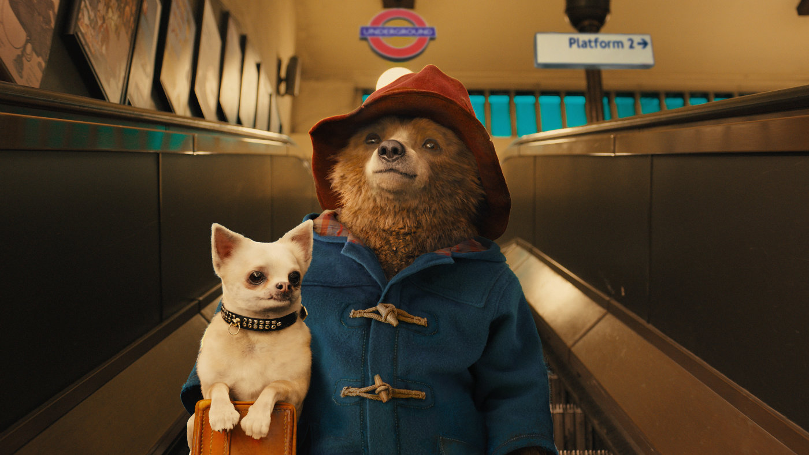
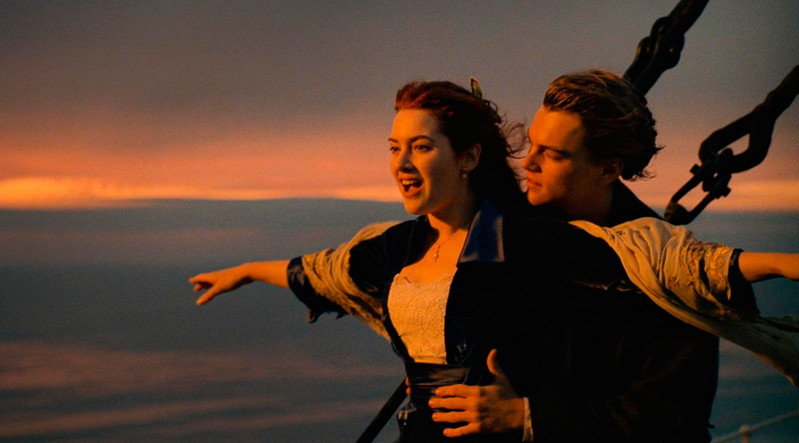

Топ 5 фильмов ужасов
1. Чужой.
Группа космонавтов высаживается на неизвестной планете и знакомится с ксеноморфом. Шедевр Ридли Скотта.
В далеком будущем возвращающийся на Землю грузовой космический корабль перехватывает исходящий с неизвестной планеты сигнал. Экипаж, в соответствии с основными инструкциями, обязан найти и исследовать источник сигнала. Оказавшись на планете, астронавты повсюду обнаруживают предметы, по виду напоминающие гигантские коконы.
⭐ 8.1/10 по оценке Кинопоиска.
2. Звонок.
Рэйчел разгадывает тайну адской кассеты. Хоррор Гора Вербински, запустивший тренд на ремейки японских ужасов.
Телефонный звонок раздаётся после просмотра некой загадочной видеокассеты. Жертве даётся ровно семь дней, а после следует неминуемая смерть.
Журналистка Рэйчел расследует загадочные смерти молодых людей, и случайно кассета-убийца попадает в руки к её маленькому сыну, над которым теперь нависает смертельная угроза. У женщины есть только семь дней, чтобы разобраться в происходящем и спасти своего мальчика.
⭐ 7.3/10 по оценке Кинопоиска.
3. Оно.
Злобный клоун терроризирует подростков. Экранизация романа Стивена Кинга с жутким Биллом Скарсгардом.
Когда в городке Дерри штата Мэн начинают пропадать дети, несколько ребят сталкиваются со своими величайшими страхами - не только с группой школьных хулиганов, но со злобным клоуном Пеннивайзом, чьи проявления жестокости и список жертв уходят в глубь веков.
⭐ 7.3/10 по оценке Кинопоиска.
4. Поезд в Пусан.
Беспощадный вирус превращает скоростной поезд в смертельную ловушку. Самый популярный южнокорейский хоррор.
У маленькой Су-ан день рождения. Девочка живет с отцом в Сеуле и очень хочет отправиться к маме в Пусан. По дороге случается непредвиденное, и на страну обрушивается загадочный вирус. Пассажирам поезда в Пусан — единственного города, отразившего атаки вируса — придется бороться за выживание. 442 километра в пути. Добро пожаловать на борт и помните — в этой гонке недостаточно выжить, чтобы остаться человеком.
⭐ 7.2/10 по оценке Кинопоиска.
5. Сайлент Хилл.
Доктора не могут найти лекарство от таинственного заболевания Шэрон, но её мать Роуз отказывается отдавать ребёнка в психиатрическую лечебницу. Вместе с дочерью она отправляется в Сайлент Хилл - город, название которого Шэрон постоянно твердит во сне. Роуз убеждена, что именно здесь она найдёт ответы, в которых так нуждается.
⭐ 7.2/10 по оценке Кинопоиска.
Топ 5 комедий
1. Один дома
Мальчик-озорник задает жару грабителям. Лучшая комедия для создания праздничного настроения у всей семьи.
Американское семейство отправляется из Чикаго в Европу, но в спешке сборов бестолковые родители забывают дома... одного из своих детей. Юное создание, однако, не теряется и демонстрирует чудеса изобретательности. И когда в дом залезают грабители, им приходится не раз пожалеть о встрече с милым крошкой.
⭐ 8.3/10 по оценке Кинопоиска.
2. Маска
Волшебная маска помогает банковскому клерку выпустить демона и поверить в себя. Яркая комедия с Джимом Керри.
Скромный и застенчивый служащий банка чувствует себя неуверенно с красивыми девушками и вообще рядом с людьми. Волей судьбы к нему попадает волшебная маска, и Стенли Ипкис приобретает способность превращаться в неуязвимое мультяшное существо с озорным характером.
⭐ 8.0/10 по оценке Кинопоиска.
3. Круэлла
Бунтарка покоряет модный мир Лондона. Предыстория злодейки из «101 далматинца» с «Оскаром» за костюмы.
Великобритания, 1960-е годы. Эстелла была необычным ребёнком, и особенно трудно ей было мириться со всякого рода несправедливостью. Вылетев из очередной школы, она с мамой отправляется в Лондон. По дороге они заезжают в особняк известной модельерши по имени Баронесса, где в результате ужасного несчастного случая мама погибает. Добравшись до Лондона, Эстелла знакомится с двумя мальчишками — уличными мошенниками Джаспером и Хорасом.
10 лет спустя та же компания промышляет на улицах британской столицы мелким воровством, но Эстелла никак не может оставить мечту сделать карьеру в мире моды. Хитростью устроившись в фешенебельный универмаг, девушка привлекает внимание Баронессы, и та берёт её к себе в штат дизайнеров.
⭐ 7.6/10 по оценке Кинопоиска.
4. Приключения Паддингтона
Наивный медвежонок находит в Лондоне новый дом и проблемы. Идеальная семейная комедия по английской классике.
Познакомьтесь, это медведь по имени Паддингтон из дремучего Перу. Он приехал в Лондон, чтобы обрести семью и стать настоящим английским джентльменом. На пути к этой цели его ожидают невероятные приключения, полные юмора и опасностей.
⭐ 7.2/10 по оценке Кинопоиска.
5. Тупой и ещё тупее
Два очаровательно непосредственных фрика отправляются в путешествие. Визитная карточка раннего Джима Керри.
Два полных придурка Ллойд Крисмас и Харри Данн пытаются нагнать красивую девушку Мэри Суонсон, чтобы вручить ей оставленный ею в аэропорту чемоданчик. Им невдомек, что Мэри оставила его специально, в качестве выкупа по договоренности с похитителями ее мужа. На переделанной в собаку машине двое недотёп пересекают Америку от Род-Айленда до Колорадо, где и находят обворожительную Мэри, в которую Ллойд уже успел втюриться без памяти.
⭐ 7.2/10 по оценке Кинопоиска.
Топ 5 мелодрам
1. Титаник.
Запретная любовь на фоне гибели легендарного лайнера. Великий фильм-катастрофа — в отреставрированной версии.
В первом и последнем плавании шикарного «Титаника» встречаются двое. Пассажир нижней палубы Джек выиграл билет в карты, а богатая наследница Роза отправляется в Америку, чтобы выйти замуж по расчёту. Чувства молодых людей только успевают расцвести, и даже не классовые различия создадут испытания влюблённым, а айсберг, вставший на пути считавшегося непотопляемым лайнера.
⭐ 8.4/10 по оценке Кинопоиска.
2. Амели.
Мечтательная чудачка пытается сделать окружающих людей счастливее. Волшебный французский ромком с Одри Тоту.
Знаете ли вы, что все события, происходящие в нашем мире, даже самые незначительные, взаимосвязаны самым удивительным и чудесным образом?
Как полет крошечной мухи может вызвать где-то далеко мощный ураган, так и странные и, на первый взгляд, непонятные поступки тихой и одинокой девушки, живущей в мире своих фантазий, могут навсегда изменить жизнь совершенно разных людей, подарив им счастье и раскрасив окружающий мир яркими красками. Эту девушку зовут Амели Пулен.
⭐ 8.0/10 по оценке Кинопоиска.
3. Красотка.
Миллионер снял даму полусвета — и влюбился на всю жизнь. Эталонный ромком с Ричардом Гиром и Джулией Робертс.
Финансовый магнат Эдвард Льюис, проезжая по ночному городу, останавливается около красивой женщины. Ее зовут Вивьен и она берет только наличными. Наутро он понимает, что не хочет расставаться с ней и предлагает девушке остаться в его номере в отеле еще на некоторое время - за дополнительный гонорар.
Вивьен оказывается в море блеска и лжи. Она терпит небрежное отношение к ней ради понравившегося мужчины, который перестал быть для нее просто клиентом.
⭐ 8.0/10 по оценке Кинопоиска.
4. Один день.
После одной ночи вместе они встречаются каждый год 15 июля. Мелодрама о чувствах, пронесенных сквозь время.
Эмма – романтична, остра на язык и хочет изменить мир к лучшему. Декстер – плейбой, баловень судьбы и хочет, чтобы мир принадлежал ему.
Впервые Эм и Декс встретились 15 июля на выпускном в колледже и провели вместе только один день. А потом пришла ночь, и они…решили остаться друзьями. Мы увидим их в тот же день через год, через два... Но сколько лет должно пройти, чтобы они поверили в свою любовь и поняли, как много значил для них этот ОДИН ДЕНЬ?
⭐ 7.8/10 по оценке Кинопоиска.
5. С Любовью, Рози.
Друзья детства проносят нежные чувства сквозь время и расстояние. Лиричный ромком по роману Сесилии Ахерн.
Рози и Алекс были лучшими друзьями с детства, и теперь, по окончании школы, собираются вместе продолжить учёбу в университете.
Однако в их судьбах происходит резкий поворот, когда после ночи со звездой школы Рози узнаёт, что у неё будет ребенок. Невзирая на то, что обстоятельства и жизненные ситуации разлучают героев, они и спустя годы продолжают помнить друг о друге и о том чувстве, что соединило их в юности…
⭐ 7.7/10 по оценке Кинопоиска.